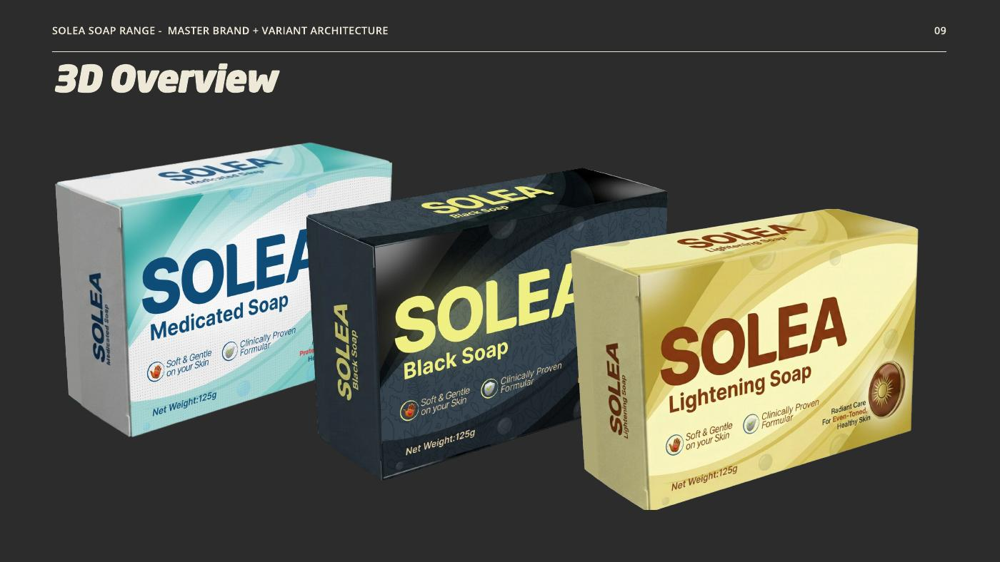
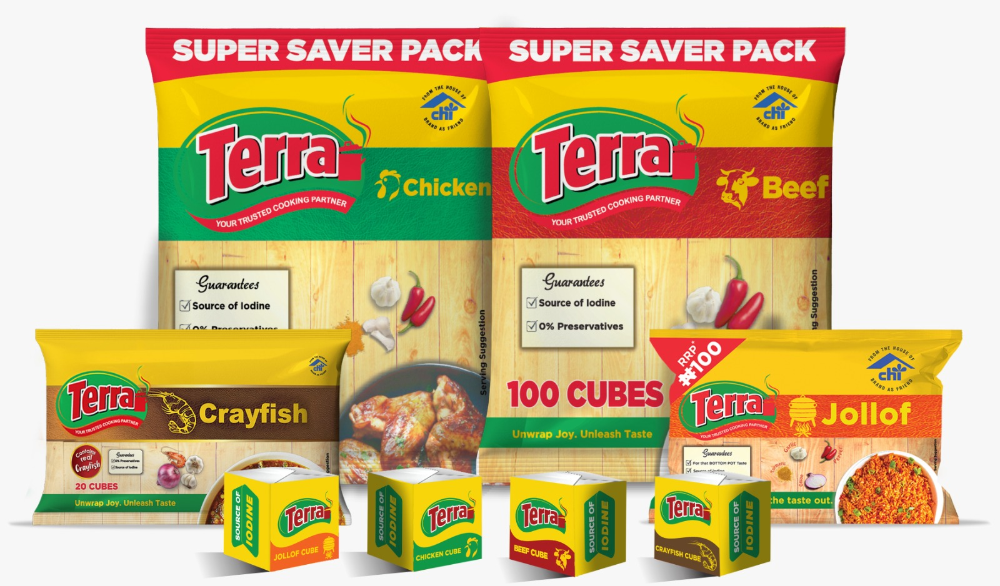
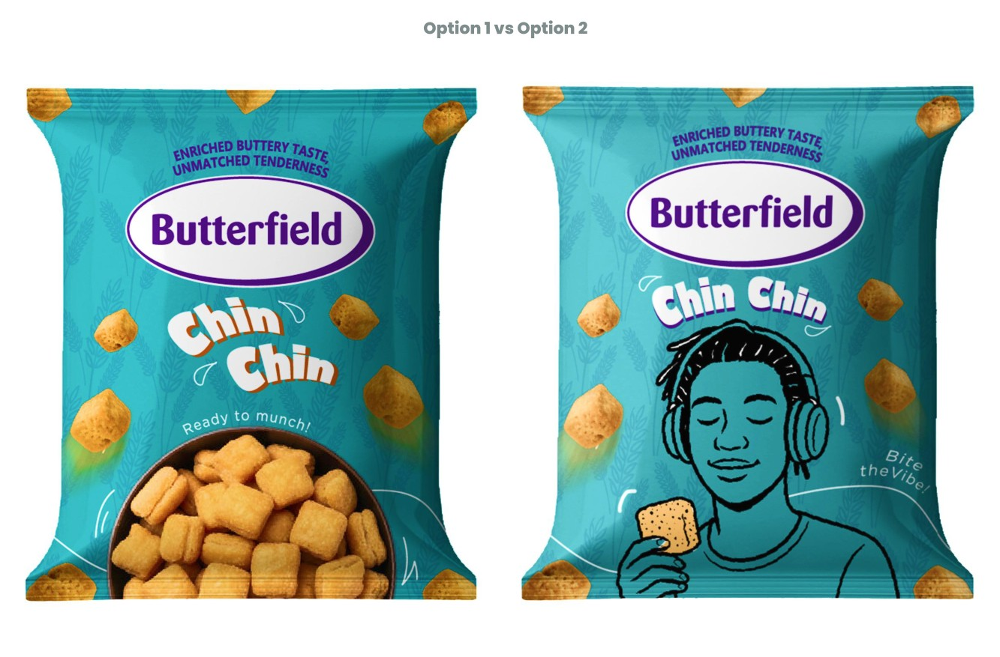
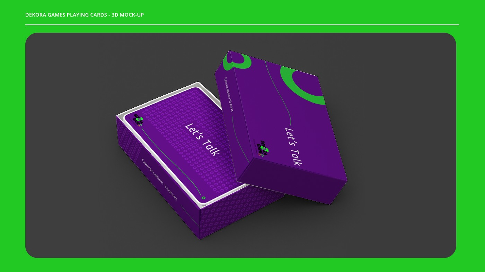

Solea soap
Packaging architecture, variant hierarchy and 3D presentation for a coordinated personal-care range.
View full flat artwork ↗AYODELE MARTINS ABIWO / PACKAGING DESIGN
I create packaging that gives brands a clear identity, makes choices easier and carries a strong idea from shelf to production.
01 / FMCG · SEASONING
A connected packaging family across pouches, individual cube wraps and premium cartons. Shared brand cues keep the range recognisable; flavour colours and product imagery help each variant stand apart.

MY CONTRIBUTION
Crayfish — branded and designed the new variant’s pouch and cube wrap.
Beef, Chicken & Jollof — rebranded the pouches and individual cube wraps.
Terra Premium — rebranded the Beef and Chicken packaging boxes.
Selected examples of the completed packaging work.
02 / FMCG · SNACKS
Two packaging concepts explore different ways to engage a snack buyer: one puts the product’s appetite appeal first; the other leads with a youthful, music-inspired lifestyle. Both use a shared turquoise identity to make the brand recognisable.

THE DESIGN THINKING
The product-led direction puts the snack at the centre. The lifestyle-led direction uses illustration and a cultural cue to make the pack feel expressive.
Each concept was developed as flat artwork and visualised in a pouch mockup to show how the panels come together.
View complete flat packaging artwork ↗03 / FROM IDEA TO ARTWORK
Good packaging needs to work as a brand system and as a physical object. My process connects the visual idea to the factory’s supplied KLD (keyline or dieline) and the printer’s requirements.
Define the audience, product, format and range; establish the message and what needs to stand out on shelf.
Explore the visual direction, hierarchy, typography, colour and flavour cues. Develop a consistent structure that can extend across variants.
Use the factory team’s supplied keylines as the structural guide. Map artwork to panels and check folds, seals, trim, bleed and safe areas against the production specification.
Review artwork, legibility, colour, links and proofs with the brand, factory and print partners; adapt the final files to their agreed specifications.
Adobe Illustrator for vector artwork and layouts / Photoshop for imagery and retouching / Cinema 4D for 3D presentation where appropriate.
04 / MORE PACKAGING
From product cartons to a game box, these projects show how a visual system adapts to different structures and uses.

Packaging architecture, variant hierarchy and 3D presentation for a coordinated personal-care range.
View full flat artwork ↗
Identity application, card layouts and box artwork bring a conversation game into a cohesive physical experience.
View full flat artwork ↗HAVE A PACKAGING PROJECT?
ayodelemartinsabiwo@gmail.com